Guía de estudio
Lo que tenés que saber para el examen teórico, resumido por tema y con la fuente de cada dato. Leé un tema, practicalo y pasá al siguiente.
1Señalización vial
Es el tema con más preguntas. Aprendé primero a reconocer cada familia por su forma y color; después, las señales una por una.
Fuente: Ley 18.191, art. 35; Guía Nacional de Conducción, págs. 124 y 126.
PARE no es lo mismo que CEDA EL PASO
PARE: te detenés siempre por completo, venga o no venga alguien, y recién después avanzás cediendo el paso.
CEDA EL PASO: bajás la velocidad y te detenés solo si hace falta para dejar pasar a quienes vienen por la otra vía.
Fuente: Ley 18.191, art. 41.
Señales reglamentarias
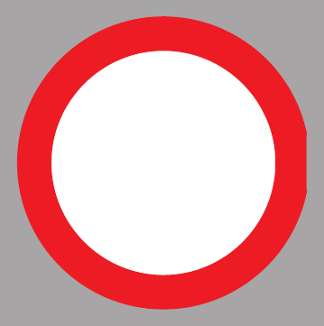
Calle cerradaIndica que la vía está cerrada al tránsito; prohíbe el paso.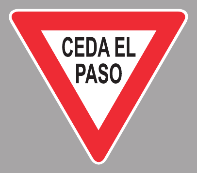
Ceda el pasoObliga a reducir la velocidad y ceder el paso al tránsito de la vía a la que se incorpora, deteniéndose si fuera necesario.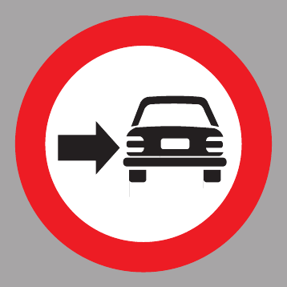
Circular por la derechaObliga a circular por la derecha del obstáculo o elemento señalizado (por ejemplo, un cantero o una isla de tránsito).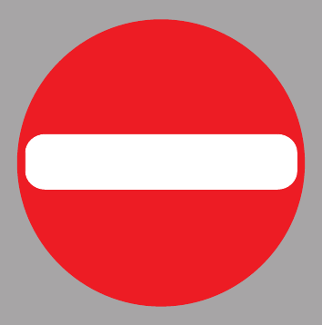
Contramano (sentido prohibido)Prohíbe circular en esa dirección: señala la entrada a una vía de sentido contrario.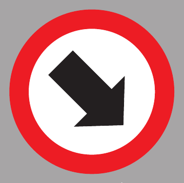
Dirección obligatoriaObliga a circular únicamente en la dirección indicada por la flecha.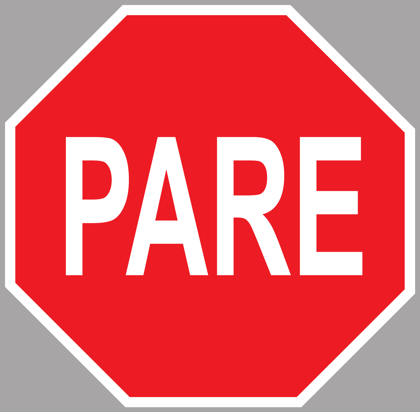
PareObliga a detener completamente el vehículo antes de la línea de detención o del cruce, haya o no tránsito, y recién después avanzar cediendo el paso.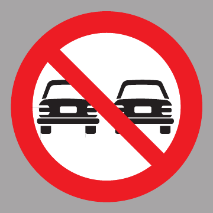
Prohibido adelantarProhíbe adelantar a otros vehículos en ese tramo.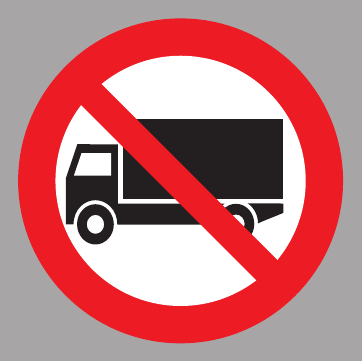
Prohibido circular camionesProhíbe el paso de camiones.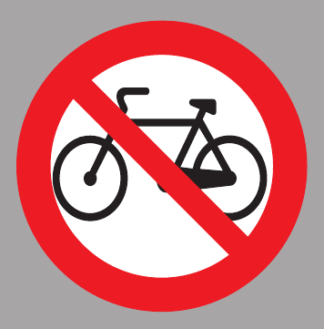
Prohibido circular ciclistasProhíbe el paso de bicicletas.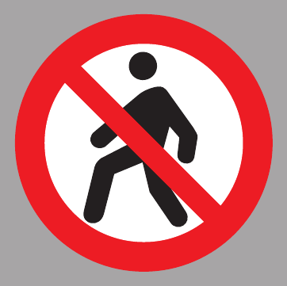
Prohibido cruzar peatonesProhíbe a los peatones cruzar la calzada en ese punto.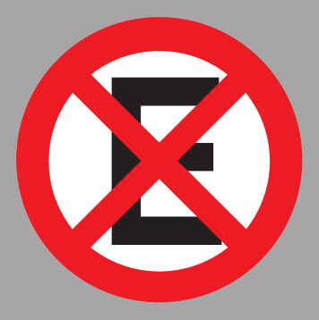
Prohibido estacionar y detenerseProhíbe tanto estacionar como detenerse, aunque sea por un instante.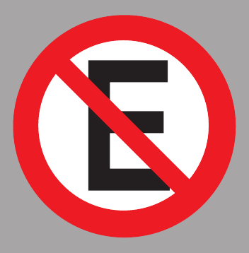
Prohibido estacionarProhíbe dejar el vehículo detenido y desocupado en esa zona; detenerse brevemente sí está permitido.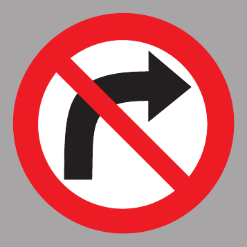
Prohibido girar a la derechaProhíbe realizar el giro a la derecha en esa intersección.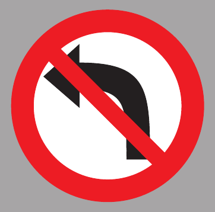
Prohibido girar a la izquierdaProhíbe realizar el giro a la izquierda en esa intersección.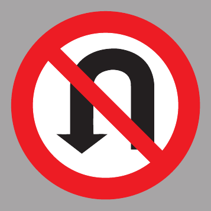
Prohibido girar en UProhíbe realizar el giro en U (cambio de sentido) en ese tramo.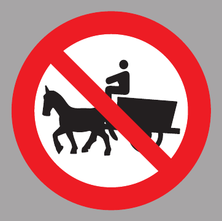
Prohibido tracción a sangreProhíbe la circulación de vehículos de tracción animal.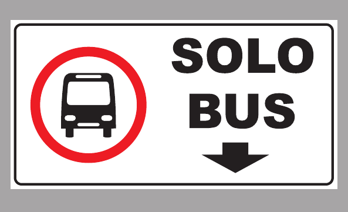
Solo bus (carril exclusivo)Señala un carril o vía de uso exclusivo para ómnibus.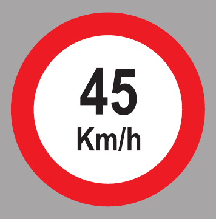
Velocidad máxima 45 km/hFija en 45 km/h la velocidad máxima permitida en ese tramo.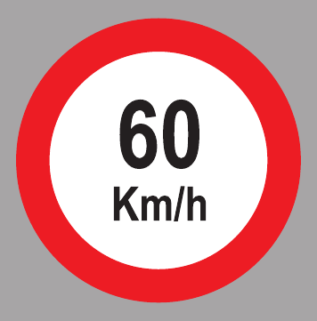
Velocidad máxima 60 km/hFija en 60 km/h la velocidad máxima permitida en ese tramo.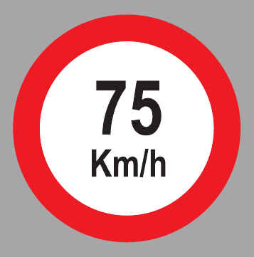
Velocidad máxima 75 km/hFija en 75 km/h la velocidad máxima permitida en ese tramo.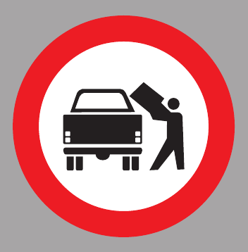
Zona de cargaSeñala un espacio reservado para la carga y descarga de mercadería.
Señales de advertencia
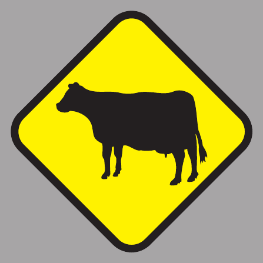
Animales sueltosAdvierte la posible presencia de animales sueltos en la calzada.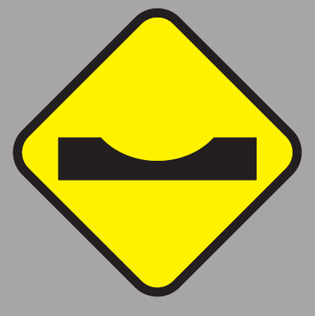
BadénAdvierte una depresión o zanja transversal en la calzada (lo opuesto al lomo de burro).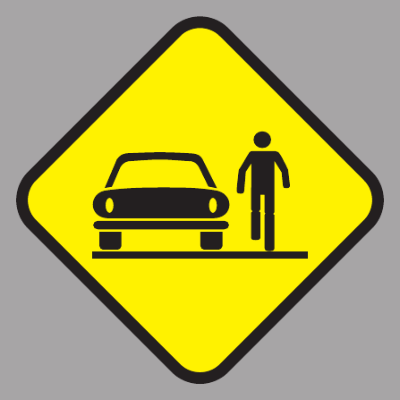
Calle sin veredasAdvierte la ausencia de veredas: puede haber peatones circulando por la calzada.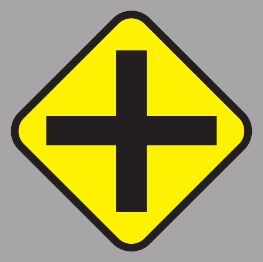
Cruce de caminosAdvierte una intersección de caminos de jerarquía similar.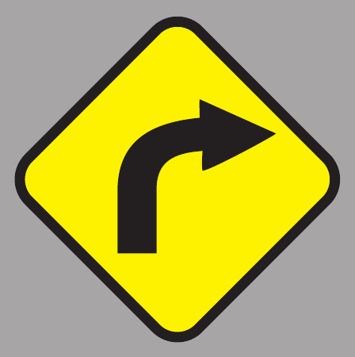
Curva a la derechaAdvierte una curva pronunciada hacia la derecha.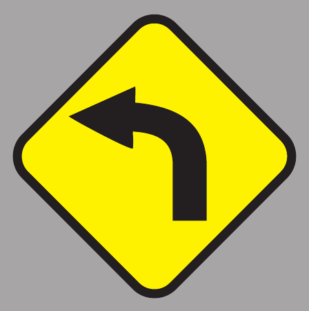
Curva a la izquierdaAdvierte una curva pronunciada hacia la izquierda.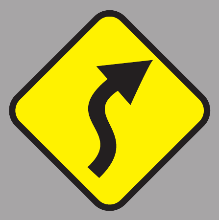
Curvas en forma de "S"Advierte una sucesión de curvas en forma de "S".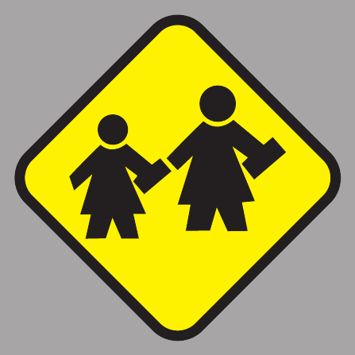
EscuelaAdvierte la proximidad de una escuela: extremar precaución por posible presencia de niños.- LiceoAdvierte la proximidad de un liceo.
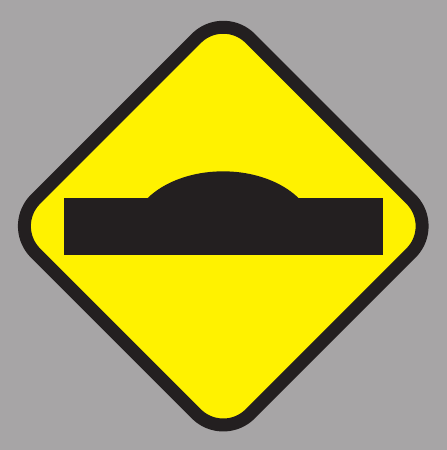
Lomo de burroAdvierte un resalto o reductor de velocidad en la calzada.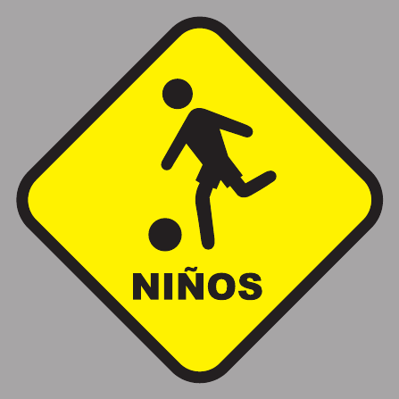
Niños jugandoAdvierte la posible presencia de niños jugando cerca de la calzada.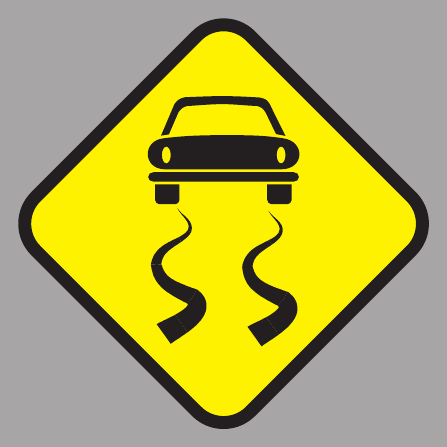
Pavimento resbaladizoAdvierte riesgo de derrape por piso deslizante (lluvia, aceite, etc.).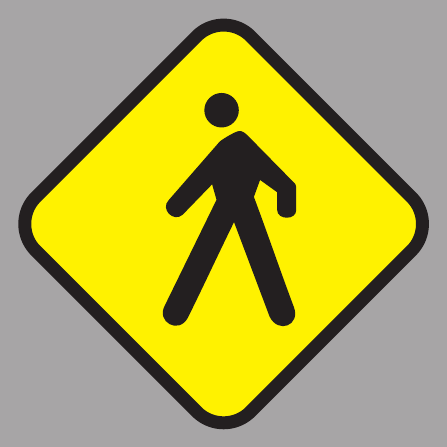
PeatonesAdvierte tránsito frecuente de peatones en la zona.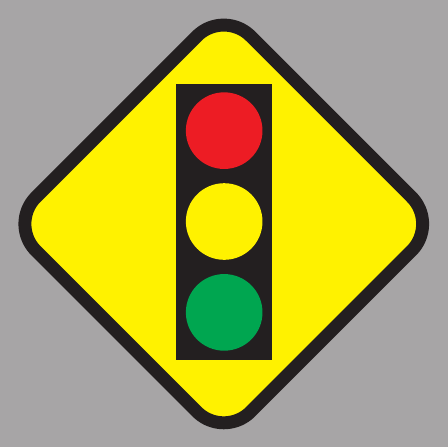
Proximidad de semáforosAdvierte que se aproxima una intersección regulada por semáforos.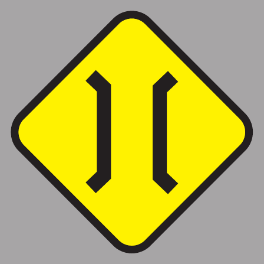
Puente angostoAdvierte un puente angosto más adelante.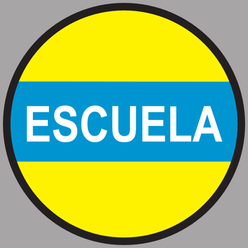
Zona escolarSeñala una zona escolar: fuera de zona urbana, la velocidad máxima baja a 20 km/h donde se junta gente, especialmente a la entrada y salida de alumnos; en zona urbana, igual hay que reducir y extremar la precaución por la presencia de niños.
Señales informativas
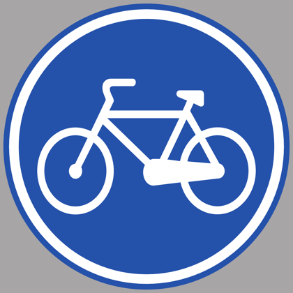
Ciclovía (senda para bicicletas)Señala una vía o senda destinada a la circulación de bicicletas.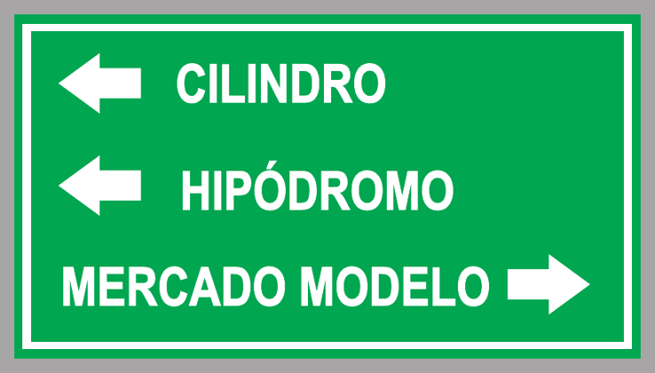
Cartel de destinosLas señales informativas verdes orientan: indican hacia dónde quedan distintos destinos.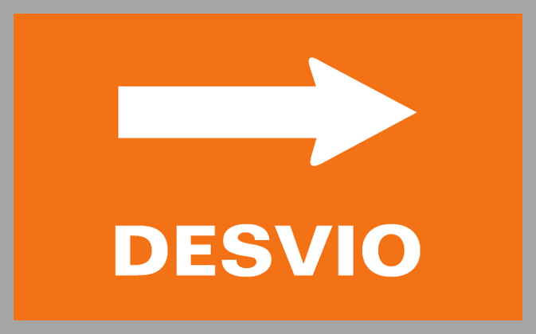
DesvíoIndica un desvío del recorrido habitual: hay que seguir la flecha.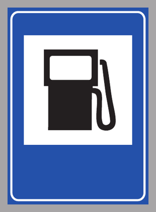
Estación de servicio (combustible)Señal informativa de servicio: indica una estación de servicio.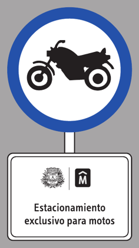
Estacionamiento exclusivo para motosIndica un espacio de estacionamiento solo para motos: los autos no pueden estacionar allí.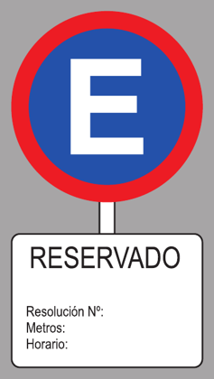
Estacionamiento reservadoIndica un espacio reservado por resolución: el cartel complementario muestra la resolución, los metros y el horario.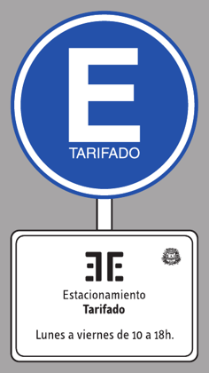
Estacionamiento tarifadoIndica que se puede estacionar pagando la tarifa, en los días y horarios del cartel.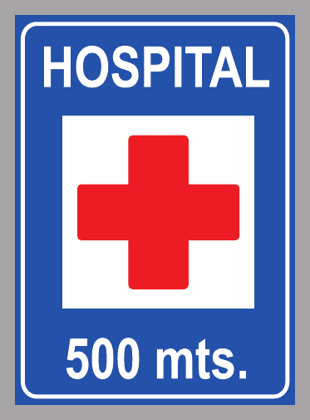
Hospital a 500 metrosSeñal informativa de servicio: hay un hospital a 500 metros.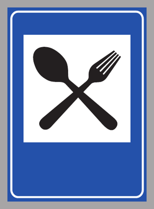
RestauranteSeñal informativa de servicio: indica un restaurante o servicio de comidas.
Semáforos y señales luminosas
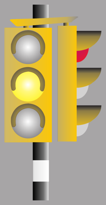
Luz amarillaLa luz amarilla anuncia el cambio a rojo: hay que detenerse si se puede hacerlo con seguridad.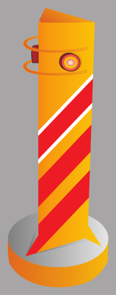
BalizaLa baliza señaliza un lugar con potencial peligro (obras, obstáculos): hay que reducir la velocidad y extremar la precaución.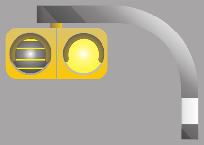
Semáforo destellanteEste semáforo amarillo destellante señaliza la cercanía de un centro de enseñanza: reducir la velocidad y atender a los niños.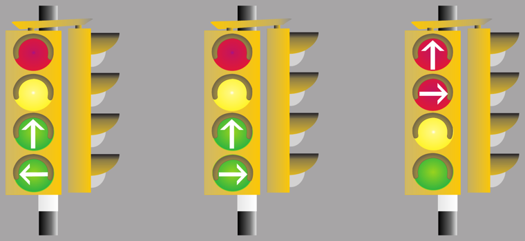
Semáforos direccionalesLos semáforos direccionales usan flechas para señalizar hacia dónde se puede avanzar y hacia dónde no.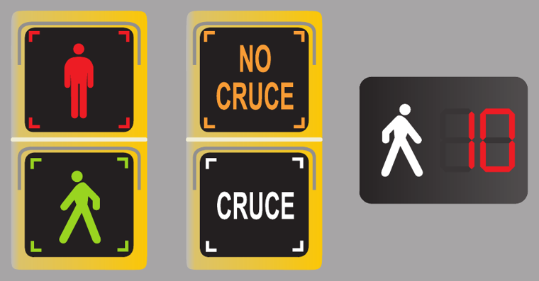
Semáforos peatonalesLos semáforos peatonales indican a los peatones cuándo pueden cruzar y cuándo no; algunos muestran los segundos que quedan.- Luz rojaCon luz roja hay que detenerse antes de la línea de detención y esperar la luz verde.
- Luz verdeCon luz verde se puede avanzar, cediendo el paso a peatones y vehículos que ya estén cruzando.
Imágenes y descripciones: Montevideo Tránsito, material educativo oficial de la Intendencia de Montevideo.
Semáforos: los casos que más se preguntan
- Amarilla fija: detenete antes del cruce, salvo que estés tan cerca que frenar genere un riesgo.
- Roja intermitente: vale como un PARE. Te detenés por completo y después seguís.
- Amarilla intermitente: podés seguir, con precaución.
- Roja con flecha verde: podés entrar con cuidado al cruce, solo en la dirección de la flecha.
- Verde: permite seguir de frente y girar a la derecha. En calles de doble sentido con semáforo, girar a la izquierda está prohibido salvo que una señal lo autorice.
- Aunque tengas verde, no avances si vas a quedar trancando el cruce.
Fuente: Ley 18.191, arts. 17 (9) y 36.
¿Quién manda en el cruce?
- El orden es: agente de tránsito, después el semáforo, después las demás señales y reglas.
- Agente de frente o de espaldas a vos: detención obligatoria.
- Agente de perfil: podés avanzar.
Fuente: Ley 18.191, arts. 39 y 40; Guía Nacional de Conducción, págs. 107 y 109.
Líneas en el pavimento
Otras marcas
- Las zonas rayadas en diagonal entre líneas continuas (áreas neutrales) separan carriles: no se circula ni se estaciona sobre ellas.
- Está prohibido circular sobre las marcas que delimitan carriles, los ejes separadores y las islas canalizadoras.
Fuente: Ley 18.191, art. 14 (4); Guía Nacional de Conducción, págs. 110-111.
Señales con el brazo
Fuente: Ley 18.191, art. 18 (6) y (7); Guía Nacional de Conducción, págs. 65 y 98.
Practicar este tema → Practicar solo señales → ↑ Volver a los temas
2Normas de tránsito y circulación
Velocidades, quién pasa primero, cómo adelantar, girar y estacionar.
Velocidades máximas
Valen cuando no hay una señal que indique otra cosa.
| Ciudad (zonas urbanas y suburbanas). La Intendencia puede autorizar 60 con señal y, en vías especialmente adecuadas, hasta 75 para vehículos livianos sin remolque. | |
| Ruta, vehículos livianos sin remolque. El MTOP puede autorizar hasta 110 en tramos señalizados. | |
| Ruta, los demás vehículos (por ejemplo, camiones). |
En ruta hay que bajar a…
| Cerca de una señal de advertencia de peligro que no indica velocidad. | |
| Cerca de un cruce peatonal señalizado, un ómnibus detenido para que suban o bajen pasajeros, un paso a nivel con barreras, un cruce sin buena visibilidad o una curva en ángulo recto. | |
| Donde se junta gente, en especial a la entrada y salida de las escuelas. |
Tampoco se puede ir tan despacio que se obstruya el tránsito.
Fuente: Reglamento Nacional de Circulación Vial, arts. 13.2 a 13.5; Ley 18.191, art. 15 (3).
Preferencia de paso
Quién pasa primero
- En un cruce sin señales: pasa el que viene por la derecha.
- Si vas a girar, cedés el paso a los peatones que cruzan y a los vehículos que siguen de frente.
- En las cebras y cruces peatonales, el peatón tiene preferencia.
- Los vehículos de emergencia con sirena y luces tienen preferencia. Está prohibido seguirlos.
- Cruce ferroviario a nivel: te detenés antes y seguís solo después de comprobar que no hay riesgo.
- Rotonda: se circula por la derecha, dejando la isleta a la izquierda.
Fuente: Ley 18.191, arts. 14, 17 y 20; Guía Nacional de Conducción, págs. 100 y 106.
Adelantar
- Se adelanta por la izquierda.
- Por la derecha solo se puede, en vías de dos o más carriles por sentido, si el de adelante indicó que va a girar o detenerse a la izquierda, o si el carril izquierdo no avanza o va muy lento.
- Prohibido adelantar en intersecciones, pasos a nivel, puentes, viaductos, túneles, pasos de peatones y donde no hay visibilidad (por ejemplo, curvas).
- Nunca se adelanta por la banquina.
- En una vía de tres carriles con doble sentido, se adelanta por el carril central.
- Antes de salir: mirá adelante que no venga nadie de frente y por los espejos que nadie de atrás haya empezado a adelantarte.
- Si te adelantan a vos: arrimate a la derecha y no aceleres hasta que el otro termine.
Fuente: Ley 18.191, art. 16; Guía Nacional de Conducción, págs. 101-102 y 114.
Giros y maniobras
- Avisá con la señalera por lo menos 30 metros antes.
- Giro a la derecha: desde el carril de la derecha, entrando al carril de la derecha de la nueva calle.
- Giro a la izquierda en calle de doble sentido: desde el eje de la calzada, sin invadir la mano contraria.
- Giro en U: se hace en las intersecciones, no a mitad de cuadra, y solo si ninguna señal lo prohíbe.
- Marcha atrás: solo en casos estrictamente justificados y sin molestar a los demás.
- Bocina: solo en una emergencia o para evitar un siniestro.
- Se circula por la mitad derecha de la calzada. Los vehículos pesados y los más lentos van por los carriles de la derecha.
Fuente: Ley 18.191, arts. 14, 15, 18, 23 y 29; Reglamento Nacional de Circulación Vial, art. 16; Guía Nacional de Conducción, págs. 65 y 96.
Estacionar
Reglas para estacionar
- El auto no puede quedar a más de 30 cm del cordón.
- Prohibido estacionar o detenerse a menos de 10 metros antes de un PARE, un CEDA EL PASO o una señal de advertencia.
- Tampoco en doble fila, sobre cruces peatonales, en paradas de ómnibus o taxis, ni frente a entradas de garaje.
- Fuera de la ciudad no se estaciona sobre la calzada si hay banquina.
Fuente: Ley 18.191, art. 19; Reglamento Nacional de Circulación Vial, art. 18.2; Guía Nacional de Conducción, págs. 103-104.
En la ruta
Manejar en ruta
- La banquina es solo para emergencias.
- Si te encandilan: no respondas con la luz larga, prendé la baliza, bajá la velocidad y arrimate a la banquina.
- Con animales sueltos: bajá la velocidad.
- Ante un banderillero (obras): bajá la velocidad y obedecé su señal.
- Si un auto es remolcado por necesidad, en el remolcado solo puede ir una persona. Nadie viaja dentro de remolques ni casas rodantes.
Fuente: Reglamento Nacional de Circulación Vial, arts. 2.3, 17.3 y 17.4; Guía Nacional de Conducción, págs. 112-116.
Peatones
- Cruzan en forma perpendicular a la calzada, rápido y por los cruces señalizados; si no hay, de esquina a esquina.
- En una ruta sin vereda ni banquina, caminan de frente al tránsito que viene.
- A 30 km/h o menos, un peatón atropellado tiene alrededor de un 90% de probabilidad de sobrevivir. Por eso importa tanto la velocidad en la ciudad.
Fuente: Ley 18.191, art. 22; Guía Nacional de Conducción, págs. 79 y 81.
3Seguridad vial y legislación
Lo que exige la ley para protegerte a vos y a los demás.
Alcohol y drogas
- Rige la tolerancia cero: no se puede conducir con alcohol en sangre.
- Primera vez: te retienen la libreta y te suspenden entre 6 meses y 1 año.
- Reincidencia: la suspensión llega hasta 2 años. Con una nueva reincidencia pueden cancelarte la libreta.
- Negarte al control no te salva: te retienen la libreta, se presume tu culpabilidad, corresponde una inhabilitación de 6 meses a 1 año y pueden multarte con hasta 100 UR.
- Las drogas, solas o con alcohol, deterioran las capacidades físicas y mentales y alteran el tiempo de reacción.
Fuente: Ley 18.191, arts. 45 y 46; Guía Nacional de Conducción, págs. 16-19.
Cinturón, apoyacabezas y airbag
- El cinturón es obligatorio para todos los ocupantes, adelante y atrás, en ciudad y en ruta.
- El apoyacabezas va a la altura de la cabeza, nunca por debajo de la nuca, a unos 4 o 5 cm.
- Sentate a unos 25 a 30 cm del volante. El airbag solo protege si llevás puesto el cinturón.
Fuente: Ley 18.191, art. 31; Guía Nacional de Conducción, págs. 33 y 35.
Niños en el auto
- De 0 a 12 años viajan en el asiento de atrás con sistema de retención infantil (SRI).
- También los adolescentes de hasta 18 años que midan menos de 1,50 m.
- Los bebés van mirando hacia atrás al menos hasta cumplir 1 año o pesar 10 kg.
- La silla tiene fecha de vencimiento: se mira en la parte de atrás.
Fuente: Ley 19.061, art. 1; Guía Nacional de Conducción, pág. 34.
Luces y celular
- Las luces bajas van encendidas siempre, a cualquier hora. Si el auto trae de fábrica luces diurnas (DRL), pueden usarse en su lugar.
- Está prohibido usar el celular al conducir, salvo que la comunicación sea sin usar las manos. Igual, el manos libres también distrae.
Fuente: Ley 18.191, art. 30; Ley 19.061, art. 13; Guía Nacional de Conducción, págs. 27 y 90.
Bicicletas
- Circulan por el borde derecho de la calzada, en fila india.
- El casco es obligatorio.
- Equipamiento obligatorio: freno delantero y trasero, espejos, timbre o bocina, y luces (blanca adelante, roja atrás) con reflectantes.
Fuente: Ley 19.061, arts. 9 y 10; Guía Nacional de Conducción, pág. 74.
Si hay un siniestro
- Siniestro de tránsito: colisión o impacto con al menos un vehículo en movimiento que deja al menos una persona lesionada. Si solo hay daños materiales, es un incidente vial.
- Si estás involucrado: detenete sin crear otro peligro, quedate en el lugar, socorré a los lesionados, señalizá, no alteres nada que sirva a la investigación y denunciá el hecho.
- Con lesionados, llamá al 911.
- Sin heridos, o si el auto se rompió: sacalo de la circulación y arrimalo al cordón.
Fuente: Ley 18.191, arts. 42 y 43; Guía Nacional de Conducción, págs. 104, 117 y 118.
Otras reglas de la ley
- «Abstenerse ante la duda»: ante la duda, no avances y elegí siempre la conducta más segura.
- Está prohibido llevar personas en la caja de un vehículo que no fue diseñado para eso.
- Los 0 km de cuatro o más ruedas deben traer ABS, apoyacabezas, cinturones en todas las plazas y airbags frontales.
- La UNASEV (Unidad Nacional de Seguridad Vial) elabora y propone la política nacional de seguridad vial.
Fuente: Ley 18.191, art. 6; Ley 19.061, arts. 5 y 14; Ley 18.113, art. 5.
4Factor humano y conducción
El factor humano interviene en más del 90% de los siniestros. La velocidad es lo que más pesa en la gravedad de las lesiones.
Cuánto tardás en frenar
Tiempo de reacción
- El cansancio, el alcohol, las drogas, la distracción y algunos medicamentos alargan el tiempo de reacción.
- A los 70 años, reaccionar a un estímulo simple suele llevar un 50% más de tiempo.
- A alta velocidad se achica el campo visual hacia los costados: es el efecto túnel.
Fuente: Guía Nacional de Conducción, págs. 6, 12, 13, 90 y 92.
Cansancio y medicamentos
- La fatiga aparece al manejar más de 4 horas seguidas: descansá al menos 20 minutos antes de seguir.
- Los antihistamínicos más antiguos (para las alergias) dan sueño.
- Mezclar alcohol con medicamentos siempre es peligroso. No te automediques y consultá al médico si vas a manejar.
- Tenés que estar física y psíquicamente apto para conducir en todo momento.
Fuente: Reglamento Nacional de Circulación Vial, art. 4.2; Guía Nacional de Conducción, págs. 14, 15 y 113.
Lluvia y niebla
- Aumentá la distancia con el de adelante y adecuá la velocidad a lo que se ve.
- Los faros de niebla junto con los principales se usan solo con niebla o lluvia.
- Hidroplaneo: el neumático pierde contacto con el piso por una película de agua. No frenes de golpe ni des volantazos: sostené firme el volante y soltá suavemente el acelerador.
Fuente: Guía Nacional de Conducción, págs. 85-87.
Lo que no ves
- Los puntos ciegos son zonas que los espejos no muestran. Para verlas hay que girar la cabeza.
- Motociclistas y ciclistas son usuarios vulnerables: no tienen carrocería que los proteja.
Fuente: Guía Nacional de Conducción, págs. 39, 73 y 95.
Conducción eficiente
- Arrancá el motor sin pisar el acelerador. En nafteros, salí enseguida; en gasoleros, esperá unos segundos.
- La primera es solo para salir: pasá a segunda a los 2 segundos o unos 6 metros.
- Cambiá entre 2.000 y 2.500 r/min en nafteros y entre 1.500 y 2.000 r/min en gasoleros.
- Circulá en el cambio más largo posible y a bajas revoluciones.
Fuente: Guía Nacional de Conducción, págs. 119-120.
5Documentación y vehículo
Qué tenés que llevar encima y qué tiene que tener el auto.
La libreta de conducir
- La expiden las Intendencias departamentales.
- Hay que aprobar tres exámenes: médico, teórico y práctico.
- La primera libreta vale como máximo 2 años. Las renovaciones pueden ser por hasta 10.
- A peatones y ciclistas no se les exige permiso.
Fuente: Ley 18.191, art. 26; Guía Nacional de Conducción, págs. 6-7.
Documentos que tenés que llevar
- Permiso de conducir.
- Registro del vehículo (libreta de propiedad).
- Certificado del SOA, el seguro obligatorio de responsabilidad civil por daños a terceros.
- Todo vehículo automotor lleva dos matrículas, adelante y atrás (los remolques, solo atrás).
Fuente: Ley 18.191, arts. 26, 28 y 44; Guía Nacional de Conducción, pág. 8.
Seguridad activa
Evita que el siniestro ocurra.
Frenos, dirección, neumáticos, luces, ABS.
Seguridad pasiva
Reduce las lesiones cuando el siniestro ya es inevitable.
Cinturones, airbags, apoyacabezas, casco.
El ABS evita que las ruedas se bloqueen al frenar a fondo, así podés seguir dirigiendo el auto. Fuente: Guía Nacional de Conducción, págs. 23-24.
Neumáticos
- La presión se controla con los neumáticos fríos.
- Con poca presión el neumático se flexiona de más, se recalienta, puede reventar y se gasta desparejo.
- Conviene cambiarlos cada 5 años aproximadamente, aunque todavía tengan dibujo.
- El indicador de desgaste de la banda de rodamiento muestra cuándo llegaron al límite.
Fuente: Reglamento Nacional de Circulación Vial, art. 10.8; Guía Nacional de Conducción, págs. 24 y 26.
Equipamiento obligatorio
- Dos sistemas de frenos independientes.
- Rueda auxiliar en condiciones.
- Dos espejos: uno interior y uno exterior del lado del volante.
- Maletín con elementos de primeros auxilios y seguridad vial.
- Dos balizas.
Fuente: Ley 18.191, art. 29; Ley 19.061, art. 15; Reglamento Nacional de Circulación Vial, arts. 7.23, 10.8 y 10.16.
+Motos solo si vas a sacar la categoría G
Lo que tenés que saber
- Casco certificado y abrochado, siempre. Reduce hasta un 29% la probabilidad de morir en un siniestro.
- Chaleco, campera o bandas reflectivas, obligatorio para quien conduce y para el acompañante.
- Solo podés llevar niños si llegan con los pies a los posapiés.
- El freno delantero aporta alrededor del 75% de la fuerza de frenado.
- En las curvas, la moto y el cuerpo se inclinan hacia adentro para compensar la fuerza centrífuga.
- Toda moto 0 km debe venderse con un casco certificado.
- Los cuatriciclos no están diseñados para llevar acompañantes ni carga.
Fuente: Ley 18.191, art. 33; Ley 19.061, arts. 2, 7 y 12; Guía Nacional de Conducción, págs. 39, 47, 54 y 76.
¿Ya leíste todo?
Probate con un simulacro de 30 preguntas, como el examen.